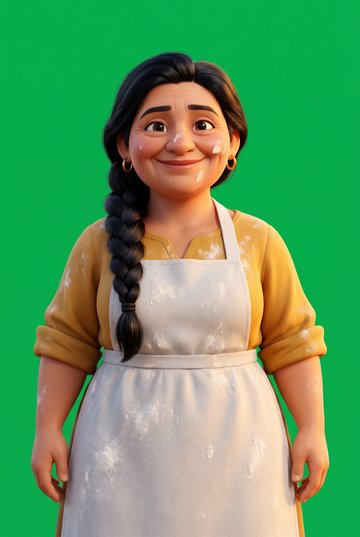
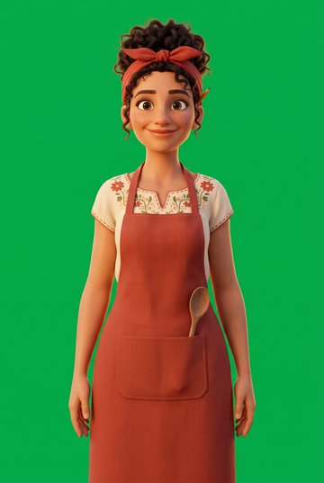
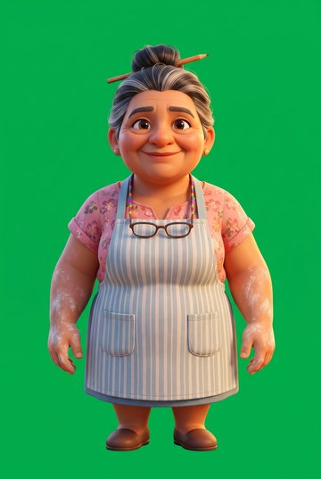
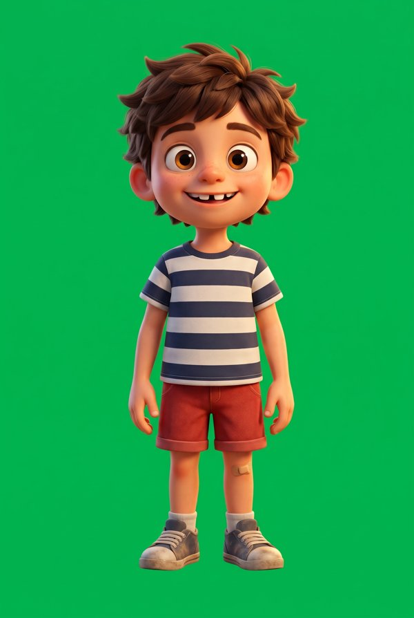
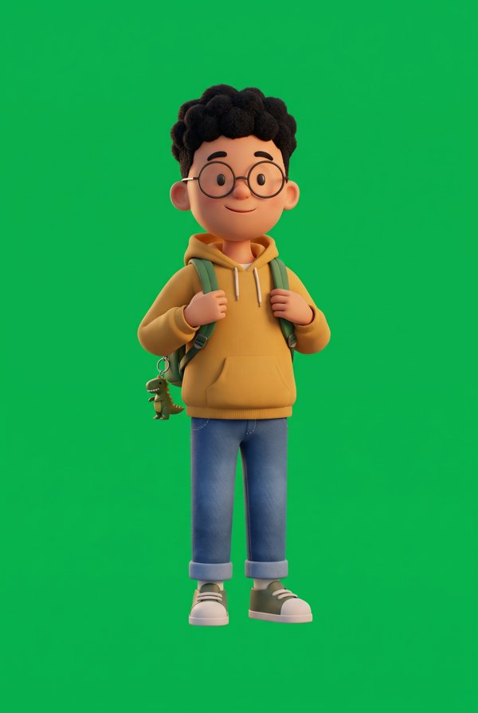
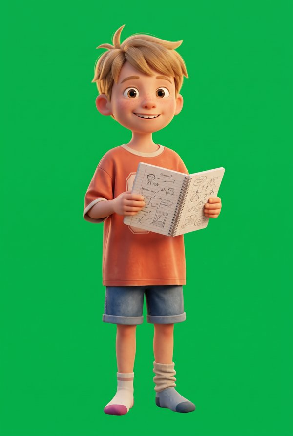

Tilde · chapter 2: voices and character designs
Rosa: design

A: early 40s, long braid, mustard blouse, white apron
B: late 30s, curly hair in red bandana, embroidered blouse, terracotta apron
C: 50s, grey bun, glasses, striped apron (close to Doña Pilar's look)Nico: design

A: messy brown hair, gap tooth, striped tee
B: curly black hair, glasses, yellow hoodie, dino backpack
C: sandy hair, freckles, orange football shirt, notebook of questionsRosa: the baker, Mexican Spanish, warm, laughs easily
“¡Hola! Yo soy Rosa. ¿Quieres probar? Prueba, prueba. El pan seco no es bueno. Un bollo cuesta un euro.”
Nico: boy, 9, curious
“¡Hola! Yo soy Nico. ¡Me gusta el bollo! ¡Está muy rico! Rosa, ¿puedo contar el dinero?”